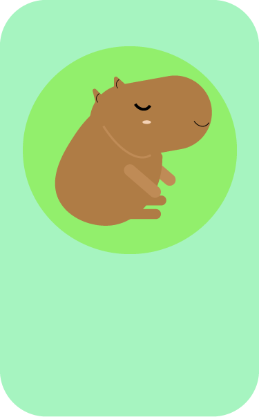

Setra é um Ambiente Virtual Acadêmico sem fins lucrativos criado para a Faculdade de Artes da Universidade
Federal do Amazonas com o objetivo de levar conhecimento gratuito e de qualidade para a comunidade, visando o
aprimoramento de seus alunos e discentes.
Você é

Faz parte da comunidade e está sempre de boas com todo mundo.